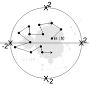

Programmieren Sie JavaKara so, dass er "zweifarbige" Apfelmännchen zeichnet!
Das Apfelmännchen wurde von Benoit Mandelbrot entdeckt; sie repräsentieren die sogenannte Mandelbrot-Menge.
Um erklären zu können, nach welchen Vorschriften eine Mandelbrot-Menge berechnet wird, stellen wir uns folgendes vor: Ein Mandelbus startet innerhalb eines Kreises an einem Anfangspunkt und fährt nach bestimmten Vorschriften einer Strecke nach.

Gelangt der Mandelbus auf seiner Fahrstrecke ausserhalb des Kreises, so ist die Fahrroute ungültig und diese Fahrstrecke wird eliminiert, bleibt der Mandelbus hingegen immer im Kreis, so kann diese "Stecke" als gültig bezeichnet werden.
Die Fahrstrecke besteht aus Punkten. Den den aktuellen Anfangspunkt im Kreis bezeichnen wir als (a | b). Der Mandelbus startet im Punkt (a | b) und kommt durch unten dargestellte Berechnung zum nächsten Punkt. x und y sind die aktuellen Koordinaten des Mandelbusses, beim Start also a und b. (x[neu] | y[neu]) ist der nächste Punkt, zu dem sich der Mandelbus bewegt. Liegt nun einer dieser Punkte nach einer bestimmten Anzahl Berechnungen nicht mehr im Kreis, so ist die aktuelle Fahrroute ungültig.
Man nehme einen Punkt (a | b) innerhalb eines Kreises mit Radius 2 und rechne:
Nun rechne man nach obiger Vorschrift die Fahrstrecke des Mandelbusses. Für weitere Stationen des Mandelbusses wird der Punkt (x[neu] | y[neu]) immer zum aktuellen Punkt (x | y). So lässt sich dann der nächste Punkt als (x[neu] | y[neu]) berechnen.
Diesen Vorgang führen wir für jeden Punkt des Kreises ( = Anfangspunkte) 100 mal durch. Wenn nach diesen 100 Iterationen mit dem gewählten Anfangspunkt der aktuelle Punkt (x | y) nicht aus dem Kreis geraten ist, wird der zuvor gewählte Anfangspunkt eingefärbt.
Schreiben Sie ein Programm, das in Kara's Welt Apfelmännchen zeichnet. Sie können wie folgt vorgehen: